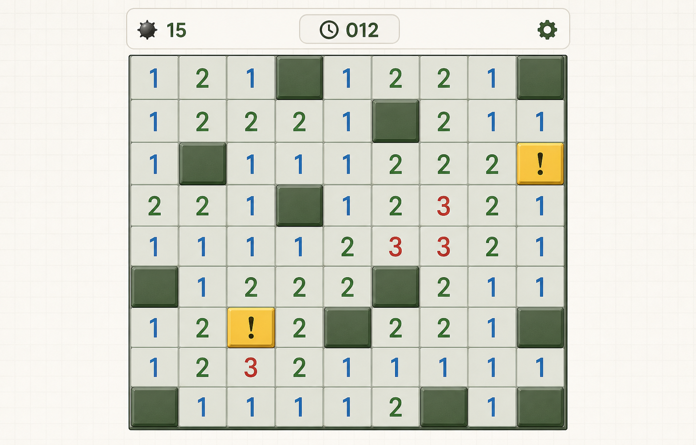
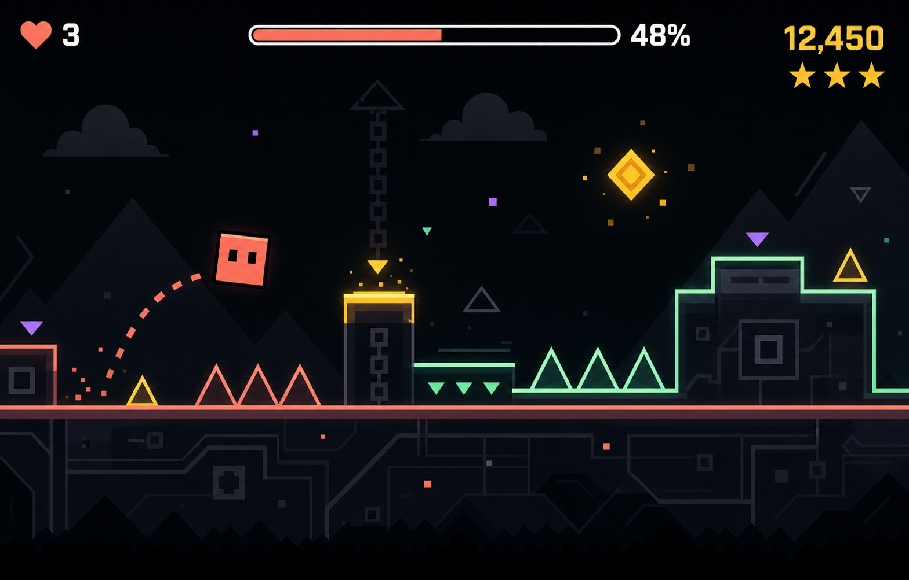

퍼즐 · 클래식
지뢰찾기
숫자를 읽고 숨은 지뢰를 피해 모든 안전 칸을 여세요.
브라우저에서 바로 플레이
Pick a game
설치 없이, 마음 가는 게임을 골라 바로 시작하세요.

퍼즐 · 클래식
숫자를 읽고 숨은 지뢰를 피해 모든 안전 칸을 여세요.

액션 · 리듬
한 번의 점프로 장애물을 넘고 끝까지 리듬을 이어가세요.
3D 액션 · 점령전
VANGUARD-7이 되어 에너지 노드를 점령하고 세 기의 적 전투 유닛을 저지하세요.